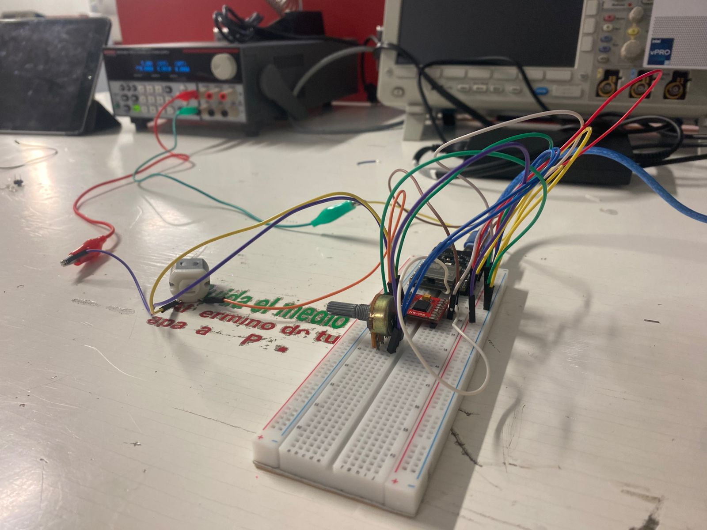
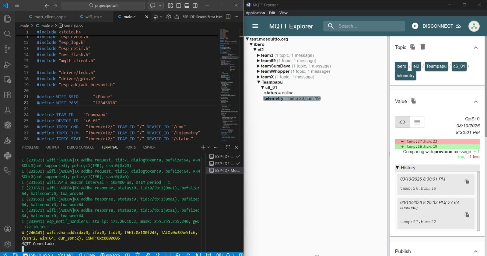
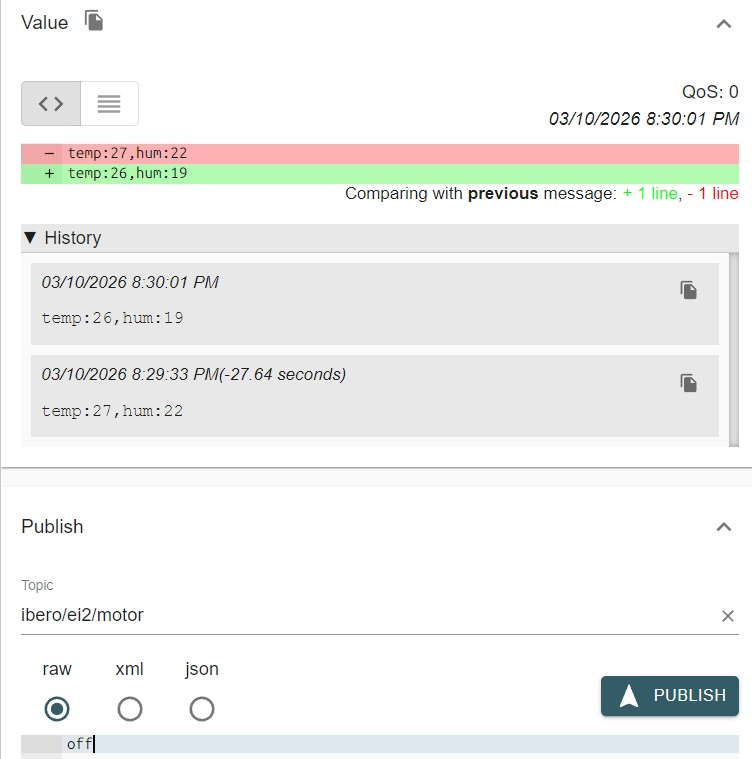

MQTT LAB PT1
Team
Yahir Gil Mendoza
Isaac Aleman
Pablo Eduardo López Manzano
1) Activity Goals
- Interface a potentiometer with the ESP32-C6 ADC (Analog-to-Digital Converter) to capture manual control inputs.
*Develop a non-blocking execution loop to ensure simultaneous sensor reading and MQTT message handling.
- Generate a precise PWM (Pulse Width Modulation) signal to regulate the motor speed through a dedicated driver.
*Establish a secure and stable connection between the ESP32-C6 and an MQTT broker Mouitto via Wi-Fi 6.
- English: Publish real-time motor speed telemetry to a specific topic for remote monitoring.
Materials
- ESP32 C6
- Cable for data
- Protoboard
- jumpers
- H bridge
- Motor DC
Analysis
Code 1
- The code has peripheral configuration the code utilizes the LEDC peripheral of the ESP32-C6 to generate a high-frequency PWM signal, ensuring smooth motor rotation without audible noise.
After the data resolution and mapping since the ESP32-C6 features a 12-bit ADC, the input signal is processed through a mapping function to match the 8-bit resolution of the PWM output ``
include
include
include
include "freertos/FreeRTOS.h"
include "freertos/task.h"
include "freertos/event_groups.h"
include "esp_system.h"
include "esp_wifi.h"
include "esp_event.h"
include "esp_log.h"
include "esp_netif.h"
include "nvs_flash.h"
include "mqtt_client.h"
include "driver/ledc.h"
include "driver/gpio.h"
include "esp_adc/adc_oneshot.h"
define WIFI_SSID "iPhone"
define WIFI_PASS "12345678"
define TEAM_ID "Teampapu"
define DEVICE_ID "c6_01"
define TOPIC_CMD "ibero/ei2/" TEAM_ID "/" DEVICE_ID "/cmd"
define TOPIC_TLM "ibero/ei2/" TEAM_ID "/" DEVICE_ID "/telemetry"
define TOPIC_STAT "ibero/ei2/" TEAM_ID "/" DEVICE_ID "/status"
// CORRECCIÓN 1: Nombres consistentes y emparejados con tu MQTT Explorer
define TOPIC_MOTOR "ibero/ei2/motor"
define TOPIC_SPEED "ibero/ei2/speed"
define ENA_GPIO 4
define IN1_GPIO 18
define IN2_GPIO 19
define TEMP_ADC_CHANNEL ADC_CHANNEL_0
define HUM_ADC_CHANNEL ADC_CHANNEL_1
static EventGroupHandle_t wifi_event_group;
define WIFI_CONNECTED_BIT BIT0
static const char *TAG = "IBERO_MQTT";
static esp_mqtt_client_handle_t client = NULL;
static int current_speed = 0; static int motor_state = 0;
static void wifi_event_handler(void arg, esp_event_base_t event_base, int32_t event_id, void event_data) { if (event_base == WIFI_EVENT && event_id == WIFI_EVENT_STA_START) esp_wifi_connect(); else if (event_base == WIFI_EVENT && event_id == WIFI_EVENT_STA_DISCONNECTED) esp_wifi_connect(); else if (event_base == IP_EVENT && event_id == IP_EVENT_STA_GOT_IP) xEventGroupSetBits(wifi_event_group, WIFI_CONNECTED_BIT); }
void wifi_init_sta(void) { wifi_event_group = xEventGroupCreate();
esp_netif_init();
esp_event_loop_create_default();
esp_netif_create_default_wifi_sta();
wifi_init_config_t cfg = WIFI_INIT_CONFIG_DEFAULT();
esp_wifi_init(&cfg);
esp_event_handler_instance_register(WIFI_EVENT,
ESP_EVENT_ANY_ID,
&wifi_event_handler,
NULL,
NULL);
esp_event_handler_instance_register(IP_EVENT,
IP_EVENT_STA_GOT_IP,
&wifi_event_handler,
NULL,
NULL);
wifi_config_t wifi_config = {
.sta = {
.ssid = WIFI_SSID,
.password = WIFI_PASS
}
};
esp_wifi_set_mode(WIFI_MODE_STA);
esp_wifi_set_config(WIFI_IF_STA, &wifi_config);
esp_wifi_start();
xEventGroupWaitBits(wifi_event_group,
WIFI_CONNECTED_BIT,
pdFALSE,
pdFALSE,
portMAX_DELAY);
}
static void motor_init() { gpio_set_direction(IN1_GPIO, GPIO_MODE_OUTPUT); gpio_set_direction(IN2_GPIO, GPIO_MODE_OUTPUT);
ledc_timer_config_t timer = {
.speed_mode = LEDC_LOW_SPEED_MODE,
.timer_num = LEDC_TIMER_0,
.duty_resolution = LEDC_TIMER_8_BIT,
.freq_hz = 5000,
.clk_cfg = LEDC_AUTO_CLK
};
ledc_timer_config(&timer);
ledc_channel_config_t channel = {
.gpio_num = ENA_GPIO,
.speed_mode = LEDC_LOW_SPEED_MODE,
.channel = LEDC_CHANNEL_0,
.timer_sel = LEDC_TIMER_0,
.duty = 0
};
ledc_channel_config(&channel);
}
static void set_motor_speed(int speed) { ledc_set_duty(LEDC_LOW_SPEED_MODE, LEDC_CHANNEL_0, speed); ledc_update_duty(LEDC_LOW_SPEED_MODE, LEDC_CHANNEL_0); }
static void motor_forward() { gpio_set_level(IN1_GPIO, 1); gpio_set_level(IN2_GPIO, 0); }
static void motor_stop() { gpio_set_level(IN1_GPIO, 0); gpio_set_level(IN2_GPIO, 0); set_motor_speed(0); }
static void sensor_task(void *pv) { adc_oneshot_unit_handle_t adc_handle;
adc_oneshot_unit_init_cfg_t init_config = {
.unit_id = ADC_UNIT_1,
};
adc_oneshot_new_unit(&init_config, &adc_handle);
adc_oneshot_chan_cfg_t config = {
.bitwidth = ADC_BITWIDTH_DEFAULT,
.atten = ADC_ATTEN_DB_12,
};
adc_oneshot_config_channel(adc_handle, TEMP_ADC_CHANNEL, &config);
adc_oneshot_config_channel(adc_handle, HUM_ADC_CHANNEL, &config);
int last_temp = -100;
int last_hum = -100;
while (1)
{
int raw_temp;
int raw_hum;
adc_oneshot_read(adc_handle, TEMP_ADC_CHANNEL, &raw_temp);
adc_oneshot_read(adc_handle, HUM_ADC_CHANNEL, &raw_hum);
int temperature = (raw_temp * 50) / 4095;
int humidity = (raw_hum * 100) / 4095;
if (abs(temperature - last_temp) >= 3 || abs(humidity - last_hum) >= 3)
{
printf("Temperatura: %d °C\n", temperature);
printf("Humedad: %d %%\n", humidity);
char msg[64];
sprintf(msg, "temp:%d,hum:%d", temperature, humidity);
if (client != NULL)
esp_mqtt_client_publish(client, TOPIC_TLM, msg, 0, 1, 0);
last_temp = temperature;
last_hum = humidity;
}
vTaskDelay(pdMS_TO_TICKS(300));
}
}
static void mqtt_event_handler(void handler_args, esp_event_base_t base, int32_t event_id, void event_data) { esp_mqtt_event_handle_t event = event_data;
switch (event->event_id)
{
case MQTT_EVENT_CONNECTED:
printf("MQTT Conectado\n");
esp_mqtt_client_subscribe(client, TOPIC_CMD, 1);
esp_mqtt_client_subscribe(client, TOPIC_MOTOR, 1);
esp_mqtt_client_subscribe(client, TOPIC_SPEED, 1);
esp_mqtt_client_publish(client, TOPIC_STAT, "online", 0, 1, 0);
break;
case MQTT_EVENT_DATA:
printf("Topic=%.*s Data=%.*s\n",
event->topic_len, event->topic,
event->data_len, event->data);
if (strncmp(event->topic, TOPIC_MOTOR, event->topic_len) == 0)
{
if (strncmp(event->data, "ON", event->data_len) == 0 || strncmp(event->data, "on", event->data_len) == 0)
{
motor_state = 1;
motor_forward();
set_motor_speed(current_speed);
}
else if (strncmp(event->data, "OFF", event->data_len) == 0 || strncmp(event->data, "off", event->data_len) == 0)
{
motor_state = 0;
motor_stop();
}
}
if (strncmp(event->topic, TOPIC_SPEED, event->topic_len) == 0)
{
int speed = atoi(event->data);
if (speed >= 0 && speed <= 255)
{
current_speed = speed;
if (motor_state)
set_motor_speed(speed);
}
}
break;
case MQTT_EVENT_DISCONNECTED:
printf("MQTT Desconectado\n");
break;
default:
break;
}
}
void mqtt_app_start(const char *broker_uri) { motor_init();
xTaskCreate(sensor_task, "sensor_task", 4096, NULL, 5, NULL);
esp_mqtt_client_config_t cfg = {
.broker.address.uri = broker_uri,
.session.keepalive = 30
};
client = esp_mqtt_client_init(&cfg);
esp_mqtt_client_register_event(client,
ESP_EVENT_ANY_ID,
mqtt_event_handler,
NULL);
esp_mqtt_client_start(client);
}
void app_main(void) { nvs_flash_init(); wifi_init_sta(); mqtt_app_start("mqtt://test.mosquitto.org:1883"); } ``
- The speed value is converted from an integer to a string using dtostrf() before being published to the MQTT broker to allow real-time dashboard visualization.
Results
- First we have the next circuit

- Our code runs and the page for MQTT

- Mqtt runs
